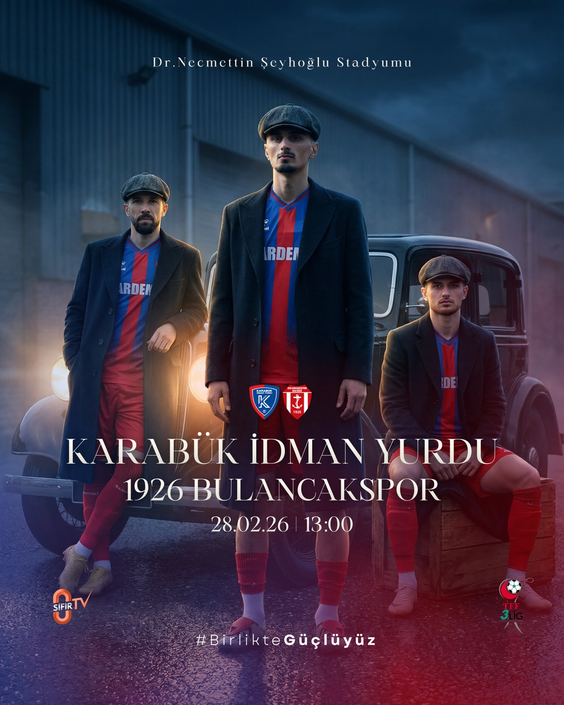
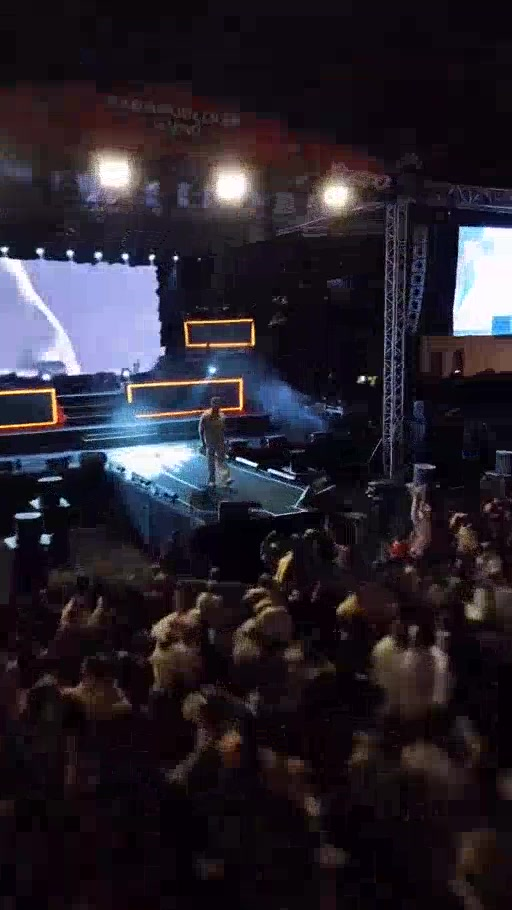
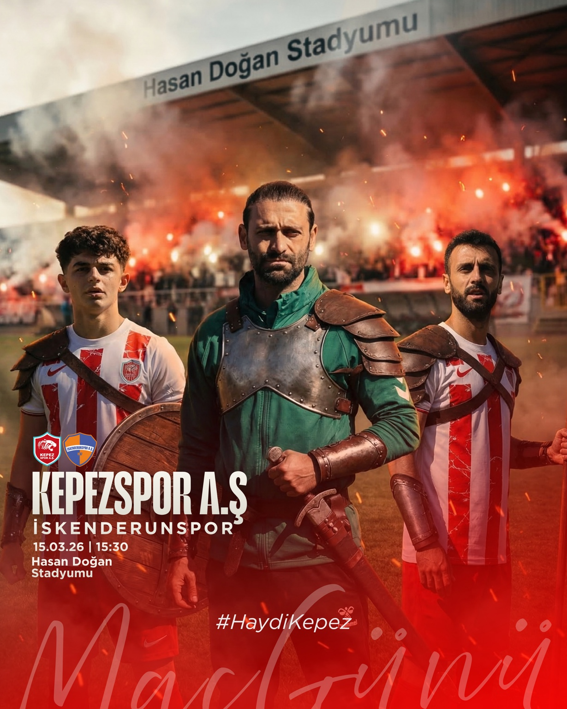

SOSYAL MEDYA · SPOR · 2025—2026Karabük İdman YurduMaç Günü · Transfer · Taraftar · Tasarım↗
KONSER · REELSKonser İçerikleriSahne · Backstage · Dikey VideoSEFO · Hakan Peker · Dedublüman · Poizi↗
SOSYAL MEDYA · SPOR · 2026Maç Günü TasarımlarıMaç Günü · Tasarım · Spor İletişimiKepezspor↗
GRAFİK TASARIM · SOSYAL MEDYATasarım ÇalışmalarıSosyal Medya · Outdoor · Kampanya · KurumsalSeçili marka çalışmaları↗